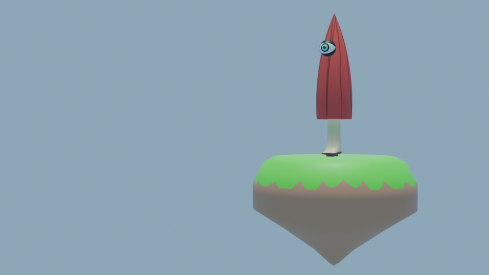
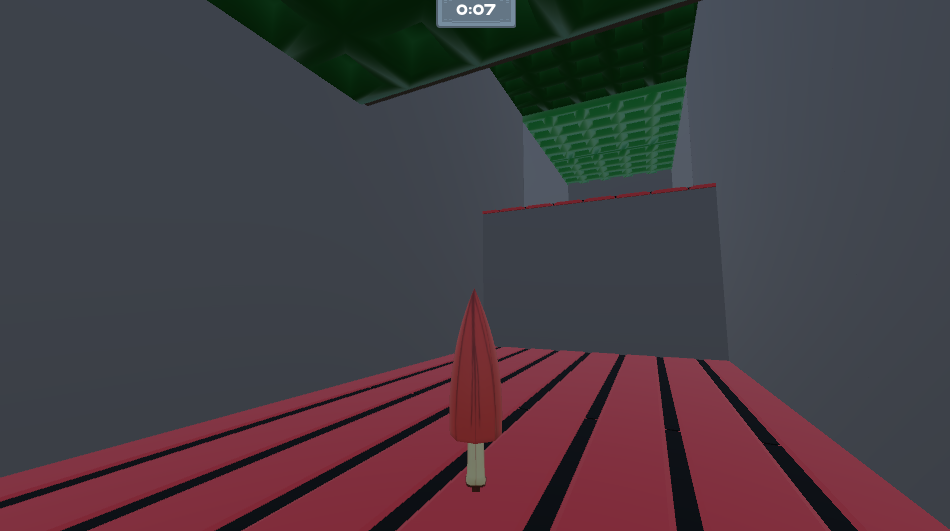
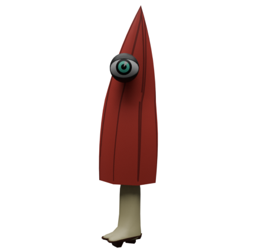
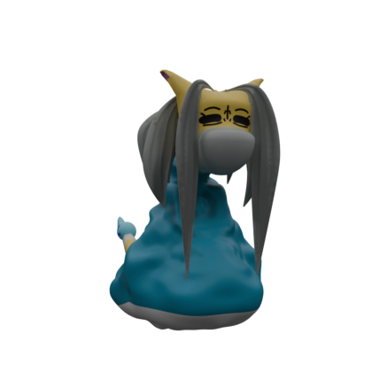
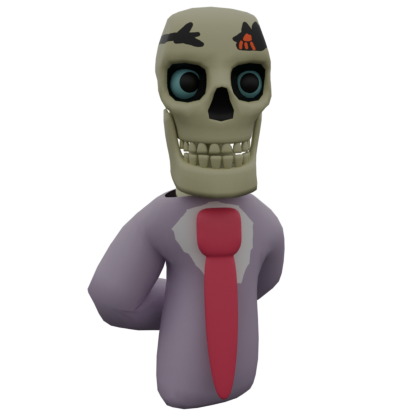

Obake is a 3D Action Platformer that blends the legends of Yokai with the infamy of mobsters.
Obake followers Keishi, an umbrella Yokai that was taken under the wing of the legendary hero, Nekomama.
On one faithful day, Keishi is dragged into a centuries long conflict, when Nekomama's past catches up to her.
Now, Keishi is forced to deal with "Gachi-Gachi", a powerful leader of the YoMafia, in order to save their guardian and restore peace to the lands.

Obake is crafted to offer a unique sense of freedom in its gameplay.
Being an umbrella, Keishi is naturally very adept to aerial manuvers.
Keishi can glide, air dash, and fast fall, letting them expolre this unusual and fantastical world.
The freedom in aerial movement allows players to chain together multiuple moves, allowing for a fast pace and satisfing experience.

The main protagonist of Obake, Keishi is inspired by the Kasa-Kozo.
Keishi is an umbrella of few words, and is under the care of Nekomama.

The adoptive mother of Keishi, Nekomama is inspired by the Nekomata.
Centuries ago, Nekomama was a legendary warrior, but retired that life style in order to tend her shop.

The main antagonist of Obake, "Gachi-Gachi" is based on the Gashadokuro.
A massive skeleton mob boss, his real name has never been spoken aloud, and those who have are never found.